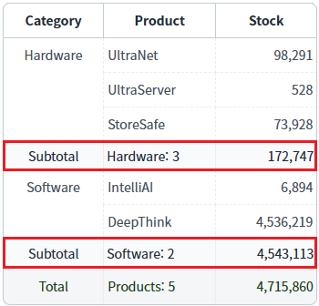
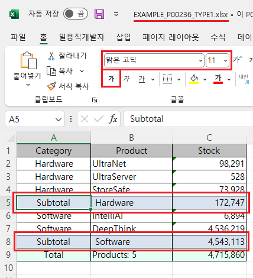
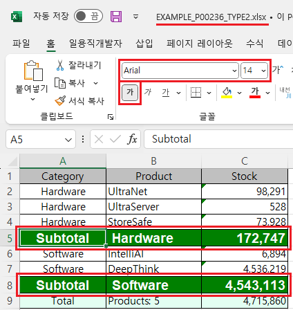

GridView의 'advancedExcelDownload' 메소드를 사용하여, 엑셀 다운로드 시 서브토탈 컬럼에 스타일을 설정한 예제입니다.
'advancedExcelDownload' 메소드의 첫 번째 인자인 JSON 객체에 설정할 수 있는 서브토탈 컬럼의 스타일 속성은 다음과 같습니다.
subTotalColor : <String:N> [default: #CCFFCC] Excel 파일에서 그리드의 subtotal분의 색
subTotalFontName : <String:N> [default: 없음] Excel 파일에서 그리드의 subtotal의 font name
subTotalFontSize : <String:N> Excel 파일에서 그리드의 subtotal의 font size
subTotalFontColor : <String:N> [default: 없음] Excel 파일에서 그리드의 subtotal의 font 색
subTotalFontBold : <String:N> [default: 없음] Excel 파일에서 그리드의 subTotal의 Bold 설정 유무
이 기능은 'advancedExcelDownload' 메소드의 첫 번째 인자 JSON의 'useStyle' 속성을 'false'로 설정해야합니다.
엑셀 다운로드 - 기본 동작
엑셀 다운로드 - 서브토탈의 스타일 설정
1
STEP 1: 초기 상태 확인하기
GridView에 서브토탈(소계)이 설정되어 있습니다.
Image 1.브라우저(Chrome) 실행 예시

2
STEP 2: '엑셀 다운로드 - 기본 동작' 버튼을 클릭합니다.
'EXAMPLE_P00236_TYPE1.xlsx' 파일이 다운로드 됩니다.
3
STEP 3: 실행된 결과를 확인합니다.
다운로드 된 'EXAMPLE_P00236_TYPE1.xlsx' 파일을 실행합니다. 서브토탈 영역의 스타일을 확인합니다. (배경색, 글자체, 글자 크기, 글자색, 글자 굵게 설정 여부) 배경색을 제외한 나머지 설정은 엑셀에 설정된 기본 값으로 설정됩니다.
Image 2.다운로드된 엑셀(2021) 파일 예시

1
STEP 1: 초기 상태 확인하기
GridView에 서브토탈(소계)이 설정되어 있습니다.
Image 3.브라우저(Chrome) 실행 예시
2
STEP 2: '엑셀 다운로드 - 서브토탈의 스타일 설정' 버튼을 클릭합니다.
'EXAMPLE_P00236_TYPE2.xlsx' 파일이 다운로드 됩니다.
3
STEP 3: 실행된 결과를 확인합니다.
다운로드 된 'EXAMPLE_P00236_TYPE2.xlsx' 파일을 실행합니다. 서브토탈 영역의 스타일을 확인합니다. - 배경색 : "green" - 글자체 : "Arial" - 글자 크기 : "14" - 글자색 : "white" - 글자 굵게 설정 : "true"
Image 4.다운로드된 엑셀(2021) 파일 예시

1
'advancedExcelDownload' 메소드를 사용하여 설정합니다.
Example 1.Script
//예제 파일의 스크립트 "scwin.btn_ex2_onclick"를 참고하세요. var jsnOptions = { fileName: "EXAMPLE_P00236_TYPE2.xlsx", //엑셀의 파일명 useSubTotal : "true", //필수 설정 - subTotal 표시 useStyle : "false", //필수 설정 subTotalColor : "green", //서브토탈의 배경색 (Green) subTotalFontName : "Arial", //서브토탈의 글자체 subTotalFontSize : "14", //서브토탈의 글자 크기 subTotalFontColor : "white", //서브토탈의 글자색 (White) subTotalFontBold : "true" //서브토탈의 글자 굵게 설정 }; //options.useSubTotal : <String:N> [default: false, true] 다운로드시 SubTotal을 출력 할지 여부. //options.useStyle <String:N> [default: false] 다운로드시 css를 제외한, style을 excel에도 설정할 지 여부 (배경색,폰트) //options.subTotalColor : <String:N> [default: #CCFFCC] Excel 파일에서 그리드의 subtotal분의 색 //options.subTotalFontName : <String:N> [default: 없음] Excel 파일에서 그리드의 subtotal의 font name //options.subTotalFontSize : <String:N> Excel 파일에서 그리드의 subtotal의 font size //options.subTotalFontColor : <String:N> [default: 없음] Excel 파일에서 그리드의 subtotal의 font 색 //options.subTotalFontBold : <String:N> [default: 없음] Excel 파일에서 그리드의 subTotal의 Bold 설정 유무 //GridView "grd_exam1"의 엑셀 다운로드 실행 grd_exam1.advancedExcelDownload(jsnOptions);
advancedExcelDownload( options , infoArr )
options.subTotalColor
options.subTotalFontName
options.subTotalFontSize
options.subTotalFontColor
options.subTotalFontBold